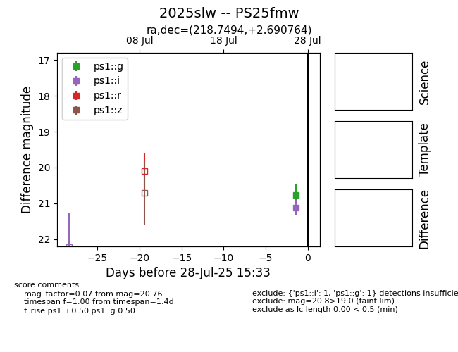

Target 2025slw at 2025-07-28 15:33, see:
TNS: wis-tns.org/object/2025slw
YSE: ziggy.ucolick.org/yse/transient_detail/2025slw
alt names
2025slw (yse,tns)
PS25fmw (panstarrs)
coordinates:
equatorial (ra, dec) = (218.7494,+2.69076)
galactic (l, b) = (352.7780,+55.20385)
photometry
last ps1::g=20.76, ps1::i=21.12
1 ps1::g, 1 ps1::i detections
